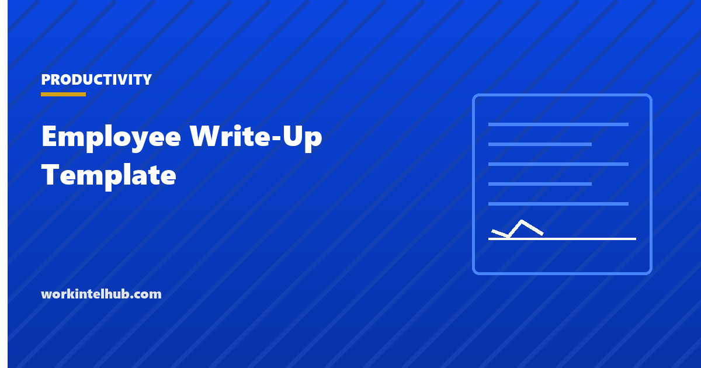

Employee Write-Up Template

An employee write-up is a written record that a specific problem with attendance, conduct or performance was raised with an employee, what standard applies, what must change by when, and what happens if it does not. It is the middle step of progressive discipline: after the conversation, before the plan or the termination.
The generator below builds one from your facts. The rest of the page is about the difference between a write-up that protects everyone and one that becomes the exhibit in a claim, which comes down to what is written and what is not.
Write-up generator
Nothing typed here leaves your browser. The generated text includes the acknowledgment and disagreement lines, which are the two most often missed. Have HR read it before it is delivered.
The eight sections and why each is there
| Section | What it does | Common failure |
|---|---|---|
| 1. What happened | Dated, observable facts | "Has a bad attitude" instead of what was said, when |
| 2. Policy or standard | Ties the facts to a rule the employee knew | Citing a policy that was never given to them |
| 3. Previous discussions | Shows this is not the first time they heard it | Nothing recorded, so the write-up looks like the first mention |
| 4. What must change | Measurable expectation | "Improve communication" |
| 5. Support | Opens the door to accommodation or a health issue | Omitted, so the employee raises it for the first time at the tribunal |
| 6. Review date | Makes the process finite | No date, so the warning lives forever |
| 7. Consequence | States the next step plainly | Vague threats, or a consequence the company will not follow through on |
| 8. Employee response | Their side, on the same document | No space for it, which reads as a decision already made |
Section 5 is the one most templates lack. The employee who says "I have been late because of a medical condition" has just triggered accommodation duties, and it is far better for that to happen in response to an explicit invitation on the form than for the form to be silent and the claim to be that nobody asked. Our performance improvement plan page covers the EEOC sequence that follows.
What not to write
- Characterisations. "Unprofessional", "negative", "not a team player". Write what was done or said, with the date. The reader can characterise it themselves.
- Anything about protected characteristics or protected activity. Age, health, pregnancy, religion, a complaint the employee made, a leave request. If the problem is genuinely unrelated to those things, the document should read that way.
- Hearsay presented as fact. "Several colleagues have complained" is useless without who, when and what. If the complaints were not investigated, say the allegation is under review rather than treating it as established.
- A standard applied to one person. If the policy cited is not enforced against others, the write-up documents inconsistency, not misconduct.
- Discipline for discussing pay or conditions with colleagues. The National Labor Relations Board treats that as protected concerted activity for most private-sector employees, union or not, and a write-up for it is the evidence in an unfair labour practice charge.
When a write-up is the wrong tool
First occurrence of a minor issue. A conversation, noted in the manager's own records, is the first step. A written warning for a single late arrival looks like the manager was looking for a reason.
Attendance that might be protected. Absence for a serious health condition, for a family member's, or after a workplace injury may be protected leave. Under 29 CFR 825.303 an employee in an emergency is excused from the usual call-in procedure. Check before writing up an absence; our attendance tracking guide covers how point systems collide with those protections.
A performance gap that needs time and support. Write-ups suit discrete conduct: lateness, a policy breach, an incident. A sustained performance gap needs a plan with targets, support and a longer horizon, which is what a PIP is for.
Serious misconduct. Theft, violence, harassment. Those are investigation and, usually, suspension matters, not warnings.
Delivering it
- Private meeting, in person or on video, with HR or a second manager present for written and final warnings.
- Read the facts, ask for the employee's account, and write it into section 8 or attach it. Change section 1 if they correct a fact and you agree.
- Ask for a signature acknowledging receipt. If they refuse, note the refusal, have the witness initial it, and give them the copy anyway. Refusal does not invalidate the warning.
- Send a copy the same day and diarise the review date.
- At the review date, close it in writing if the standard was met. A warning with no end is the second most common reason these documents fail.
Key takeaways
- A write-up records dated facts, the standard, previous discussions, what must change, support offered, a review date, the consequence, and the employee's response.
- Facts, not characterisations. Write what was done and when; let the reader judge it.
- Include an explicit invitation to raise health or accommodation issues. Its absence is what claims are built on.
- Never write up protected activity, including discussing pay or conditions with colleagues.
- A first minor occurrence gets a conversation. Possibly protected absence gets checked first. Sustained performance gaps get a PIP, not a warning.
- A signature acknowledges receipt, not agreement. Refusal is noted and witnessed, and the warning stands.
- Close the warning in writing at the review date if the standard was met.
Frequently asked questions
What is an employee write-up?
A written record that a specific attendance, conduct or performance problem was raised with an employee, stating the facts, the standard that applies, what must change by when, and the consequence if it does not. It usually follows a documented conversation and precedes a final warning or a performance plan.
What should an employee write-up include?
Dated observable facts, the policy or standard, previous discussions, the measurable expectation, support offered, a review date, the consequence of not meeting the standard, and space for the employee's response, with signatures acknowledging receipt. The generator above produces all eight sections.
Does an employee have to sign a write-up?
No. The signature acknowledges receipt, not agreement, and the document should say so. If the employee refuses, the manager notes the refusal, a witness initials it, and the employee is given a copy. The warning remains valid.
Can an employee be written up for being late?
Yes, if the attendance policy was communicated and the lateness is not protected. Absence or lateness caused by a serious health condition, a family member's, or an emergency may be protected under leave laws, so check the reason before issuing a warning.
How long does a write-up stay on file?
As long as the policy says, commonly six to twelve months for a first written warning, after which it should be closed in writing if the standard was met. A warning with no expiry undermines the process. Retention of the document itself follows the company's personnel record rules.
What is the difference between a write-up and a PIP?
A write-up addresses discrete conduct or attendance issues with a short review period. A performance improvement plan addresses a sustained performance gap with targets, support and a longer horizon, typically 30 to 90 days. Using a write-up for a performance gap skips the support the person is entitled to.